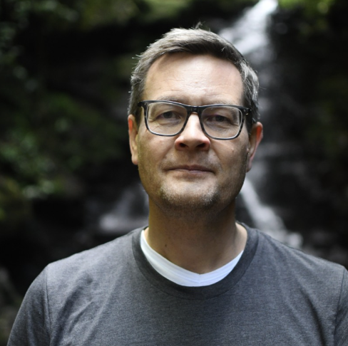
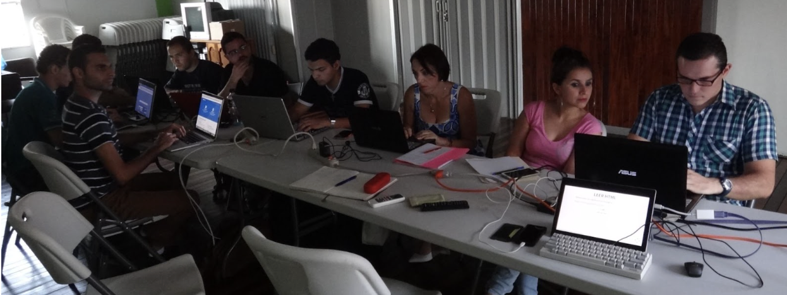
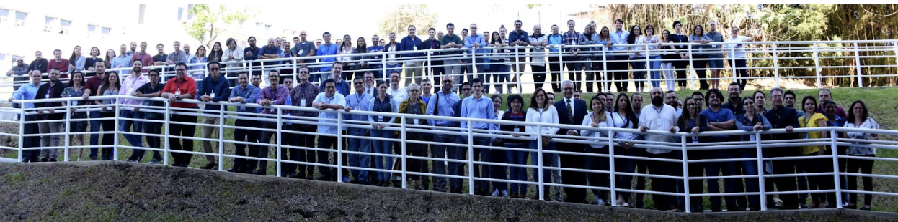

Frans van Dunné, the organizer of the San Carlos R User Group, recently discussed with the R Consortium the development of the R community in Costa Rica and the broader Latin American (LATAM) region. He also talked about the growth of events such as the ConectaR conference and the success of the Data Latam podcast, which he co-hosts to delve into data science in Latin America. Additionally, Frans highlighted the challenges of building a data-driven community in a rural area and the creative methods they’ve employed to connect people through R.

Please share your background and involvement with the RUGS group.
I have a background in biology, and during my PhD in tropical ecology, I encountered some statistical questions that I needed to solve through programming. That’s when I started learning to program, initially with Perl. Eventually, I discovered that I enjoyed solving data-related problems through programming, and that led me to R. It was around 2001 when I first started programming in R.
Eventually, I married and emigrated to Costa Rica (my wife is Tica). Knowing no one in the area, I started an R User Group to connect with people and navigate the area.
Very soon after arriving in Costa Rica, I established my town’s San Carlos R user group. Initially, we held our meetings in-person, but I soon discovered that some attendees traveled for hours by bus to reach San Carlos. Realizing the impracticality, I decided to move our meetings online, and to my surprise, it worked out well. This change occurred even before the pandemic, and we began to see people from Peru and other distant locations joining our group. San Carlos is a small rural area with a population of around 50,000, so having individuals from different parts of Latin America join us was truly amazing.
 One of the first San Carlos R User Group meetings - February 2016, Ciudad Quesada, Costa Rica
We had to stop our online meetings because Meetup informed us that, according to their policy before the pandemic, we wouldn’t be able to use their platform if we didn’t hold physical meetings. The world is different now, but that was the situation back then.
Can you share what the local R community is like in San Carlos?
 Participants of ConectaR 2019 - January 2019, San José Costa Rica
We collaborated with the University of Costa Rica to organize an event that brought together industry, academia, and citizen science professionals for a conference focused on R. The event is called Conecta R. We started in 2019 and held the latest edition this year, Conecta R 2024. When we started, we wanted to understand R’s current status and usage in the LATAM region. It only confirmed that R is widely used in academia. Most statistics courses have transitioned from licensed software to R. R is also used widely in industry.
 Participants of the Tidymodels workshop during ConectaR 2024, March 2024, San José, Costa Rica
Participants of the Tidymodels workshop during ConectaR 2024, March 2024, San José, Costa Rica
At ixpantia, the company I co-founded, we work with clients in various industries, such as consumer packaged goods, retail, oil and gas, and energy production. Additionally, a significant number of clients utilize our financial services.
Would you like to tell us about your recent events?
We’ve resumed our monthly online meetings for the San Carlos R user group. The meetings now take place on the first Saturday of the month in the morning, and anyone is welcome to join through Meetup.com. Our last meeting was held recently, and it was great to see familiar faces returning.
Additionally, we have a podcast called Data Latam, which covers topics related to data science, not just R. We aim to release a new episode every month. We run this podcast in parallel with meetings, serving a similar purpose. It’s about providing examples and even role models of professionals working with data to show that you don’t need to be an IT professional or a programmer to work with data.
Please share more about the Data Latam podcast. How did you come up with the idea of starting it? Would you like to highlight a few of your favorite podcasts from this series?
The story behind the Data Latam podcast is funny. The co-host, Diego May, and I met through an R Package I wrote to access data from an open-data platform he had developed. We shared an interest in using data and data science to help the development of LATAM and agreed to start a podcast to get to know each other better. Within two months, we had the first opportunity to start a project, and that is when we founded ixpantia, which brings best practices in data science, data engineering, and data strategy to LATAM.
We have done 110 podcasts to date! It seems like a lot, but we learn so much from every conversation that it hardly feels like an effort. Some of my personal favorites that are related to R include Episode 109 with Noam Ross, where we talked about rOpenSci, episode 98 with Sherly Tarazona about her work and R-Ladies Lima, episode 85 with Tareef Kawaf from Posit and episode 75 with Jorge Ahumada about the work they do at Wildlife Insights. I could go on, but pointing to the complete list at www.datalatam.com makes more sense. I’m sure there is something for everyone interested in data there.
Do you recommend any techniques for planning for or during the event? (Github, Zoom, other.) Can these techniques be used to make your group more inclusive to people who cannot attend physical events in the future?
Online events are great. I live in a rural area, and attending a physical event, even here in Costa Rica, requires a long three-hour drive to the capital. We have done that and will do it again, but having the option to go online is much more practical and has a broader reach.
When we started our first online meetings, we used Google Hangouts, which would fry my laptop after one hour. These tools have improved so much over the last few years, largely pushed by the boom in remote work during the pandemic. We still like Zoom and its functionality for setting up and executing events, including registration.
Participants of the Datathon 2019 in San Carlos, August 2019, Santa Clara, Costa Rica
We have organized two datathons (similar to a hackathon but focused on data) that were incredibly enjoyable and well-attended. The key to their success was our partnerships. One datathon was organized in collaboration with the Costa Rican government, and the other involved two local universities: The University of Costa Rica (UCR) and the Costa Rica Institute of Technology (TEC). I still meet people who attended these events and have fond memories of them.
How do I Join?
R Consortium’s R User Group and Small Conference Support Program (RUGS) provides grants to help R groups organize, share information, and support each other worldwide. We have given grants over the past four years, encompassing over 75,492 members in 39 countries. We would like to include you! Cash grants and meetup.com accounts are awarded based on the intended use of the funds and the amount of money available to distribute.